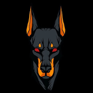

NEON PLAYER X / V8.8FUTURO EN SOMBRA.
FUTURO EN SOMBRA.
NEÓN VIVO.
Una interfaz futurista donde radio, música, pedidos y entretenimiento conviven en una sola experiencia.

NEON ORB · WALLET CONTROL
● MONITORIZANDOIDENTIDAD & ECONOMÍA
Dashboard unificado · identidad pública · economía computable · activos externos verificados.
LIVE RADIO NETWORK
RADIO STATION GRID
Red de emisoras · reconexión automática · estado en tiempo real
RED LISTA
● LISTO
Selecciona una emisora
Reproducción dentro de la página
40
RADIO EQUALIZERANALIZANDO
VOLUMEN
WEB OFICIAL ↗STATION MATRIX12 EMISORAS
MEDIA DECK · PRUEBA ANTES DE COMPRAR
● LOCAL · PRIVADONEON PLAYER
Carga tu propia música o vídeo y prueba aquí las funciones del reproductor.
NOW PLAYING
NEON PLAYER X
Añade un archivo para comenzar la prueba · audio y vídeo locales
00:0000:00
MEDIA STUDIO X
ESPERAESTUDIO PRO
ARRASTRA TU MÚSICA O VÍDEO AQUÍPrueba el reproductor con tus propios archivos · solo permanecen en tu dispositivo
LISTA DE PRUEBA0
Aún no has añadido archivos.
CONTROL CENTER · V5.6 → V8.8
CUMULATIVENEON CONTROL
ENERGÍA · — · CURIOSIDAD · — · VÍNCULO · —CICLO · — · DECISIÓN · — · ZONA · —RECURSOS · NXC — · CREDITS — · BITS —
VISUAL ENGINE
12 THEMES